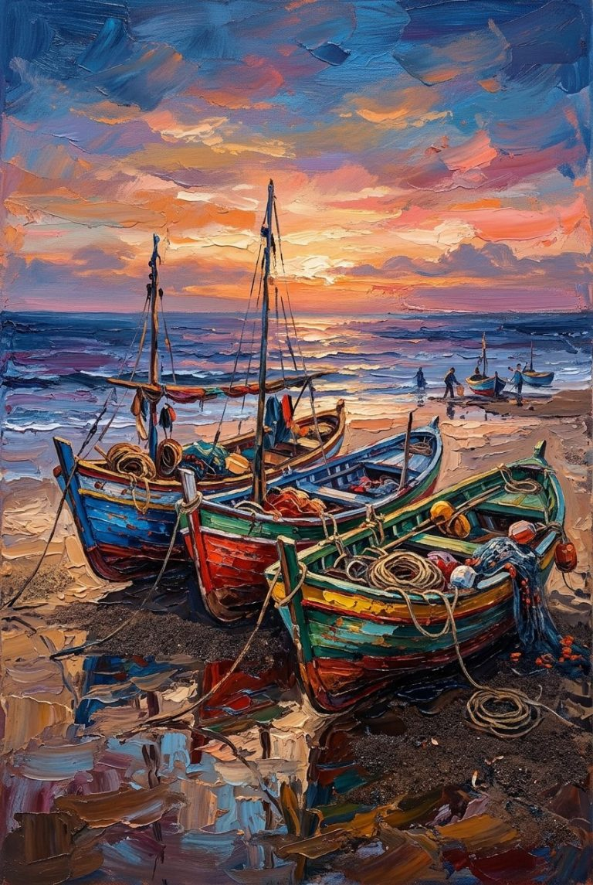
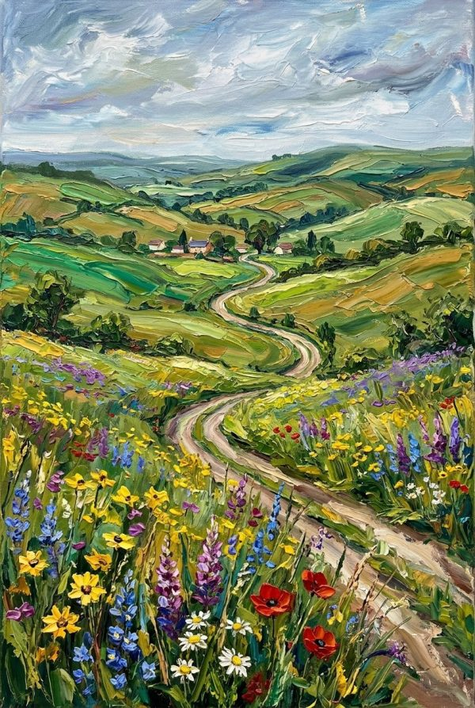

Atelier in Porto Alegre · R. João Guimarães, 31 — Rio Branco
Katalog › Fischerboote im Morgengrauen

Studioai-Kollektion · mit KI erstellte digitale Kunst
Fischerboote im Morgengrauen
Fischerboote im Morgengrauen gehört zur Kollektion Studioai.SilviaPorto mit KI-generierter digitaler Kunst.
Eine Landschaft, die ein Fenster in der Wand öffnet — ideal für Wohnzimmer und Ruheräume.
Geben Sie eine von Silvia Porto handgemalte Version in Acryl auf Leinwand in Ihrer Wunschgröße in Auftrag (Mindestlieferzeit 15 Werktage).
Es gibt keinen Online-Verkauf: Silvia klärt Größe, Ausführung, Preis und Lieferzeit mit Ihnen, bevor sie zu malen beginnt.
Direkter Kontakt mit Silvia: (51) 99283-8195 · silviabeust1@gmail.com
Ausprobieren
Sehen Sie das Bild an Ihrer Wand
Wählen Sie einen Raum oder laden Sie ein Foto Ihrer Wand hoch, um die richtige Größe zu sehen.
Ähnliche Werke
 Sonnenschirme am StrandStudioai-Kollektion
Sonnenschirme am StrandStudioai-Kollektion Tropische LaguneStudioai-Kollektion
Tropische LaguneStudioai-Kollektion Möwen in der AbenddämmerungStudioai-Kollektion
Möwen in der AbenddämmerungStudioai-Kollektion Steg durch die DünenStudioai-Kollektion
Steg durch die DünenStudioai-Kollektion Felsküste am smaragdgrünen MeerStudioai-Kollektion
Felsküste am smaragdgrünen MeerStudioai-Kollektion Segelboot auf blauem MeerStudioai-KollektionEbbe bei SonnenuntergangStudioai-Kollektion
Segelboot auf blauem MeerStudioai-KollektionEbbe bei SonnenuntergangStudioai-Kollektion
Straße zwischen blühenden HügelnStudioai-Kollektion© 2026 Silvia Porto — Bildende Kunst · Porto Alegre, RSAufträge · WhatsApp (51) 99283-8195 · silviabeust1@gmail.comEntwickelt von Diego Kasper - +Bilder